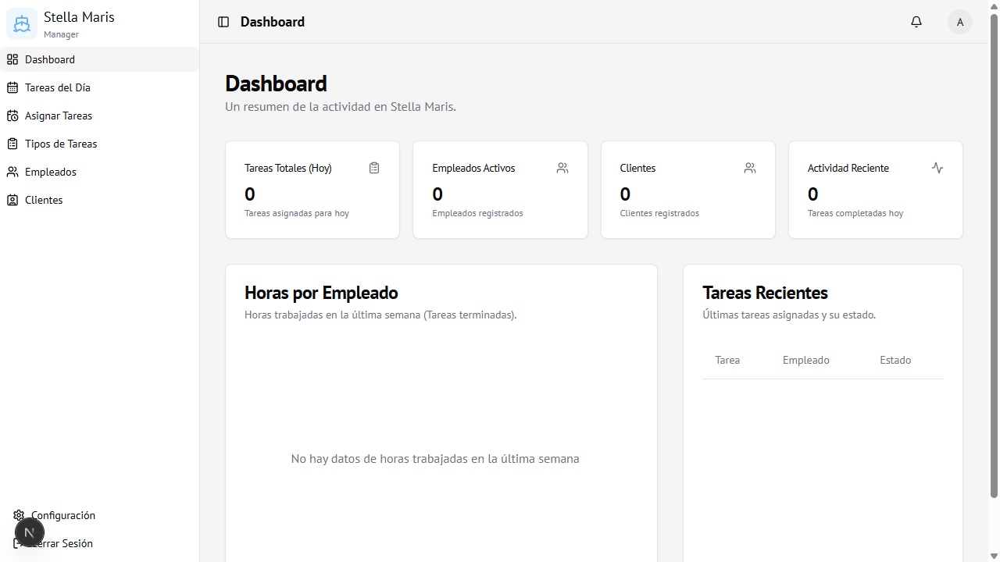

Módulo 02
Dashboard
Pantalla principal del administrador con resumen del estado de la guardería.
Vista general
El Dashboard muestra en tiempo real el estado operativo de la guardería náutica.

Tarjetas de métricas
En la parte superior hay 4 indicadores actualizados en tiempo real:
| Tarjeta | Muestra |
|---|---|
| Tareas Totales (Hoy) | Cantidad de tareas asignadas para el día de hoy |
| Empleados Activos | Total de empleados registrados en el sistema |
| Clientes | Total de clientes registrados |
| Actividad Reciente | Tareas completadas hoy |
Gráfico de horas por empleado
Muestra un gráfico de barras con las horas trabajadas por cada empleado durante la última semana, considerando solo las tareas con estado Completada.
Si no hay datos aún, se muestra el mensaje "No hay datos de horas trabajadas en la última semana".
Los empleados aparecen ordenados de mayor a menor carga horaria.
Los empleados aparecen ordenados de mayor a menor carga horaria.
Tabla de tareas recientes
Lista las últimas asignaciones creadas con:
- Nombre de la tarea
- Empleado asignado
- Estado actual (Pendiente / Aceptada / Completada / Rechazada / Cancelada)
Acceso
Solo visible para usuarios con rol Administrador.
Ruta:
Ruta:
/dashboard